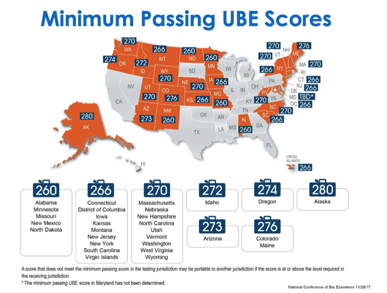

紐約州律師考試NY BAR Exam 現在採用由NCBE全國統一命題的UBE 考試，由Multistate Bar Examination (MBE)、 Multistate Performance Test (MPT)跟Multistate Essay Examination (MEE)三個考試組成。考試時間每年兩次，訂在每年二月、七月最後一週的週二與週三，週二進行MEE 與MPT考試，週三進行MBE 考試。
MBE 考試為選擇題測驗，以聯邦法為準，占總成績50%，測驗學生對於基礎科目的知識理解與運用，總共200道選擇題，分為早上與下午各測驗100題，作答時間為三小時100道題。在許多沒有採用UBE 統一律師考試的州，幾乎也都採用了MBE 作為選擇題部分的測驗（例如加州），所以把MBE 考試掌握好，對各州考生而言都是重要課題。為了幫助同學更有效率的複習MBE並掌握最新考點與出題技巧，我們特別針對MBE推出了3-Day Final Review 總複習課程，需要的同學請點此參考！
MEE考試為申論題（Essay）測驗，總共6題，測驗時間三小時，每題約有30分鐘時間可以作答，但可以自由調配時間。除了MBE 的科目以外，MEE的測驗範圍還增加了以下考科：Business Association（包含Agency, Partnership, Corporation 三科）、Family law, Secured Transactions, Trusts（包含Wills, Trusts）、Conflict of Laws，總共測驗16 科。
MPT 考試為律師綜合分析能力測驗，簡單來說，就是測驗你成為律師的能力。UBE 包含了2題MPT，測驗時間三小時，1 題約有90分鐘的時間可以作答。題目會模擬辦案情境，給予考生案件事實以及適用法律，考生不需要記憶任何州法，必須依照題目所給的法律進行分析作答，寫出題目要求的法律文件，例如：Memorandum, Opinion letter 等等。
每一個採用UBE考試的州，可以自行訂定錄取的分數線，紐約州的通過分數線為266。如果成績夠高，而且也具有其他州要求成為律師的資格要件，可以申請transfer the UBE score讓別的州採認，就不需要考很多次律師考試。以下是各州通過UBE 考試的成績，沒有標示的州則是不採用UBE 考試的州。
